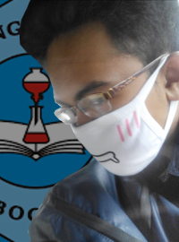
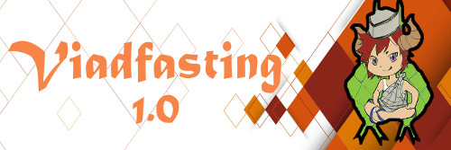
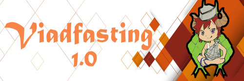

Hobi saya!
Sudah kenal dengan saya kan? hehe. Sekarang saya akan memberitahu pada kalian apa saja hobi saya. Saya memiliki beberapa hal yang sangat saya gemari. Diantaranya adalah sebagai berikut :
- Desain Grafis 
- Bersepeda
- Browsing di internet
- Tidur
Salah satu kegemaran saya adalah desain grafis, saya merasa penaran dengan dunia desain grafis sejak kelas 6 SD sehingga saya pun memutuskan untuk mengikuti kursus desain grafis untuk mengisi masa libur kelulusan dari SD menuju SMP.
Banyak karya yang telah saya hasilkan seperti cover DVD, poster film, sticker, banner, hoodie, dan lain lain. Berikut adalah beberapa contohnya
 


Dulu saat saya masih SMP setiap hari pulang pergi ke sekolah selalu naik sepeda, dari pertamanya naik sepeda gunung milik almarhum bapa saya lalu ganti ke sepeda fixie dan akhirnya karena mendapat rezeki lebih saya dapat membeli road bike.

Nah ini dia, browsing di internet. Dari browsing di internet saya bisa dapat banyak sekali ilmu yang bermanfaat. salah satunya adalah dapat membuat website seperti ini. Kalau bukan karena informasi dari internet dan bantuan dari beberapa teman saya tidak mungkin bisa membuat website bagus seperti ini.
Saya juga mendapat banyak teman dari browsing di internet tepatnya di media sosial. Di internet saya mendapatkan banyak hal. Dari mulai yang bermanfaat, menyenangkan, mengerikan, mengharukan sampai yang menyebalkan. Tapi, dengan luasnya manfaat internet kita harus bijak dalam menggunakannya.

NAHINI (wkwkwk) hobi saya yang saya geluti dengan sangat serius. Tidur itu udah kaya sebuah anugrah yang tak tergantikan yang diberikan Tuhan sehingga badan kembali bugar seperti sedia kala. Saya suka sekali tidur bahkan terkadang saya bisa tertidur dimana saja dan kapan saja.